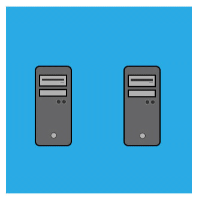

Introdução
Segundo Wikipedia, 2018. Uma Rede de computadores é formada por um conjunto de máquinas
eletrônicas
com processadores capazes de trocar informações e compartilhar recursos, interligados por um
sub-sistema
de comunicação, ou seja, é quando há pelo menos dois ou mais computadores, e outros dispositivos
interligados
entre si de modo a poderem compartilhar recursos físicos e lógicos, estes podem ser do tipo: dados,
impressoras,
mensagens (e-mails), entre outros. Uma rede de computadores ou rede de dados é uma rede de
telecomunicações
digital que permite que compartilhemos recursos. Em uma rede de computadores, os dispositivos de
computação
em rede trocam dados entre si usando um link de dados. As conexões podem ser estabelecidas usando mídia
de
cabo ou mídia sem fio.
Em suma, uma rede de computadores é formada por um conjunto de módulos processadores (MP's)
capazes
de trocar informações e compartilhar recursos, interligados por um sistema de comunicação.
O que é um IP
Um Endereço de Protocolo da Internet (Endereço IP), do inglês Internet Protocol address (IP address), é um rótulo numérico atribuído a cada dispositivo (computador, impressora, smartphone etc.) conectado a uma rede de computadores que utiliza o Protocolo de Internet para comunicação. Um endereço IP serve a duas funções principais: identificação de interface de hospedeiro ou de rede e endereçamento de localização. O Protocolo de Internet versão 4 (IPv4) define um endereço IP como um número de 32 bits. Entretanto, devido ao crescimento da Internet e o esgotamento de endereços IPv4 disponíveis, uma nova versão do IP (IPv6), usando 128 bits para o endereço IP, foi desenvolvida em 1995 e padronizada como RFC 2460 em 1998.
Sub Redes
Uma sub-rede é uma subdivisão lógica de uma rede IP. A subdivisão de uma rede grande em redes menores resulta num tráfego de rede reduzido, administração simplificada e melhor performance de rede.